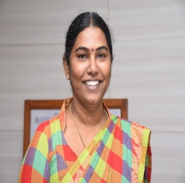
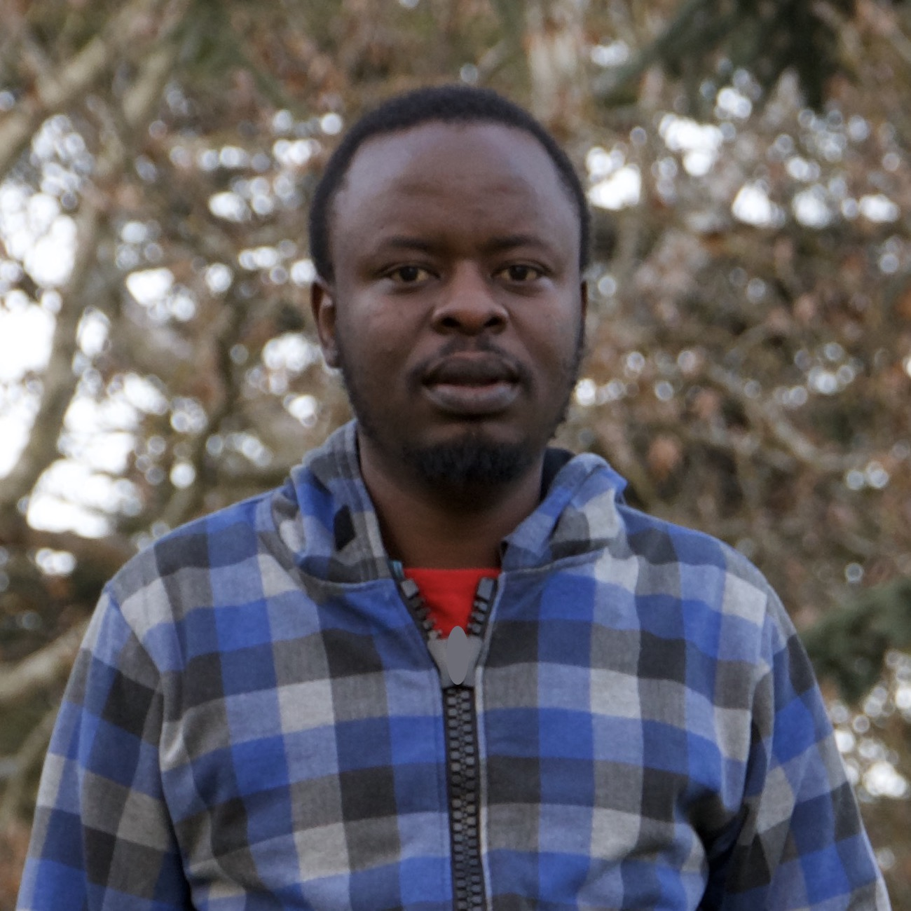

Principal Investigator (PI)
Eric Umuhoza is an assistant teaching professor at Carnegie Mellon University Africa. Prior joining CMU-Africa, Umuhoza held different academic positions in European universities, including postdoctoral researcher and teaching assistant at the Department of Electronics, Informatics and Bioengineering - Polytechnic University of Milan (Italy); senior postdoctoral researcher at the Department of Information Engineering, Computer Science and Mathematics - University of L'Aquila (Italy); and visiting scholar at the École des Mines de Nantes (France).
His research interests include (model-driven) software engineering, user
interaction design, and big data management for Internet of Things.
Eric holds a Ph.D. in Information Technology and a Msc in Engineering of Computing
Systems both obtained from the Polytechnic University of Milan (Politecnico di
Milano).
Co-Principal Investigator (Co-PI)
Ignace H. Kabano is a senior lecturer of Demography and Statistics in the department of Applied Statistics, School of Economics, College of Business and Economics and head of training at the African Centre of Excellence in Data Science (UR ACE-DS) at the University of Rwanda. Kabano has substantial 13 years in academia and 15 years' background in analyzing Demographic and Health Survey (DHS) data as evidenced by related publications. He also has been involved in conducting socioeconomic impact assessments relating to land valuation, traffic surveys, energy, micro-hydro power generation, private public partnership, resettlement action plan studies, agri-business and other development related studies on behalf of public and private institutions, international organizations (AfDB, WB, JICA etc.) and local Non-government organizations.
He is the representative of the Centre for Integrated Development Research and Action (CIDRA Ltd). He holds a PhD in Demography from Utrecht in the Netherlands.
Senior Researcher
Dr. kayal is currently the Assistant Director, International Relations Office and an Associate Professor in Department of NWC, School of Computing at SRM Institute of Science and Technology, she has 22+ years of teaching experience and a strong research profile. She has many international collaborations and 45+ Publications in SCI and Scopus high indexed journals. Countries collaborated includes USA, Japan, UK, Belgium, Sweden, Oman, Rwanda, Malawi etc., she is visiting Professor and Researcher to University of Rwanda, Africa. She is founder and mentor for the Not-to-Profit Club IoTAlliance since 2014. This club recently awarded to be role model club under AICTE SPICES scheme, Government of India. Recipient Best paper presentation award in International Conference on Computer Communications and Internet in Chiba, Japan.
Kayal hold PhDs in Computer Science and Internet of Things obtained from SRM University, a Master of Engineering in Embedded Systems from The College of Engineering, Guindy-Anna University and a Bachelor of Engineering in Electronics and Communications Engineering from Sri Sai Ram Engineering College.
Industrial Partner - Gerayo Ltd
CEO and Co-Founder of Gerayo Ltd, a software engineering-focused tech start-up. He has 9 years of software engineering experience, where he developed software in a variety of industries, including but not limited to health, education, business, and transportation. He led and contributed to a number of projects, including the carpool project, which aims to reduce traffic congestion and greenhouse gas emissions by allowing commuters to share rides.
He holds a BSc in Business Information System from Mount Kenya University and a MSc in Information System from Carnegie Mellon University. Aside software Engineering, he has 5 years of experience as assistant lecturer from UTB and Rwanda Polytechnic.
Research Assistant — KCRC
profile
Research Assistant — KCRC
profile
Research Assistant — KCRC
profile
Research Assistant — KCRC
profile
Research Assistant — KCRC
profile
Research Assistant — UR ACE-DS
profile
Research Assistant — ACE-DS
profile
Research Assistant — UR ACE-DS
profile
Research Assistant — UR ACE-DS
profile
Data Analyst Intern — UR ACE-DS
profile
Data Analyst Intern — UR ACE-DS